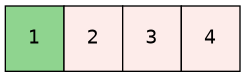
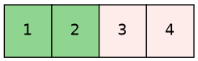
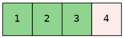
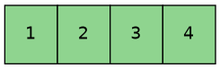
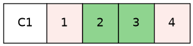
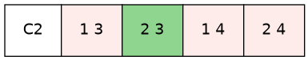
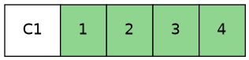
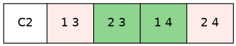
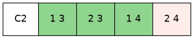
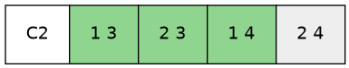

assertThat(new Pair(3, 2).maxComponent()).isEqualTo(3);Красивые цифры,
или
Что мы измеряем на самом деле, когда измеряем покрытие
В чём проблема
Магическая метрика «покрытие кода»
Магическая метрика «покрытие кода»
 | Иван Пономарёв
|
Покрытие строк (C0)
Покрытие строк
Покрытие инструкций (например, в JaCoCo)
Покрытие инструкций показывает, сколько инструкций
было выполнено, а сколько — нет.
 | 
|
И всё-таки!
Какие выводы?
Покрытие C1: покрытие ветвей
Тестируемый метод: IsLeapYear
IsLeapYear: инструментирование кода
IsLeapYear: покрытие ветвей 25%
 | 
|
IsLeapYear: покрытие ветвей 50%
 | 
|
IsLeapYear: покрытие ветвей 75%
 | 
|
IsLeapYear: покрытие ветвей 100%
 | 
|
Какие выводы?

Покрытие ветвей (C1) не зависит от их «длины»: каждая точка ветвления имеет одинаковый вес при расчёте процента.
Проценты получаются более пессимистичными, но для проекта это полезнее (скоро разберём почему).
Мой совет: переходите с покрытия строк и инструкций на покрытие ветвей прямо сейчас.
Метрики графа
 |
Для этого метода все три числа равны 4, но это лишь совпадение! |
Дополнительные инструкции в ветви не увеличивают CC…
 | Для цепочки инструкций без ветвлений CC = 1 при любой длине цепочки! E - N + 2 = 2 - 3 + 2 = 1 |
Дополнительные инструкции в ветви не увеличивают CC…
 | Для цепочки инструкций без ветвлений CC = 1 при любой длине цепочки! E - N + 2 = 2 - 3 + 2 = 3 - 4 + 2 = 4 - 5 + 2 = 1 (добавляем одно ребро и одну вершину) |
…А точки ветвления — увеличивают
…А точки ветвления — увеличивают
 |
CC = E - N + 2 = 11 - 10 + 2 = 3 |
Математический факт (согласно Википедии)
 | Цикломатическая сложность
|
Метрика «цикломатическая сложность»
Какое значение CC допустимо?
Какие выводы?
Подоходный налог в вымышленной стране
Давайте тестировать!
 |
Баг
Тестируем: добавим инструментирование
Тестируем: покрытие ветвей 50%
 |  
|
Тестируем: покрытие ветвей 100%
 |  
|
Пропущенный путь выполнения
 | 
|
Логически невозможный путь выполнения
 | 
|
Какие выводы?
Покрытие C0/C1 — лишь одномерная проекция
многомерной картины
 |  |
При низком C0/C1 рост покрытия
отражает рост качества тестов
 |  |
При низком C0/C1 рост покрытия
отражает рост качества тестов
 |  |
При низком C0/C1 рост покрытия
отражает рост качества тестов
 |  |
При высоком C0/C1 проценты растут,
но большие области остаются непроверенными
 |  |
При высоком C0/C1 проценты растут,
но большие области остаются непроверенными
 |  |
При высоком C0/C1 новые полезные тесты
уже не увеличивают метрику
 |  |
Промежуточный вывод
Искусственные 100% покрытия: сложно достичь,
но с качеством это не связано